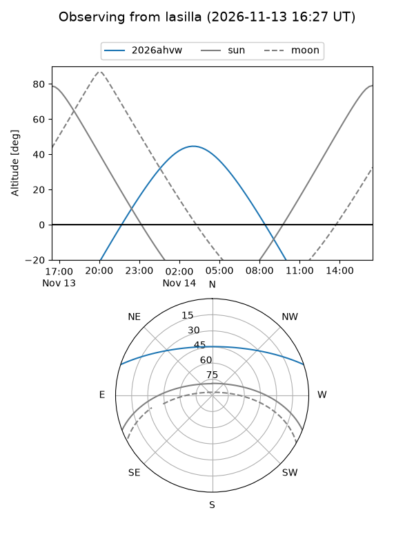
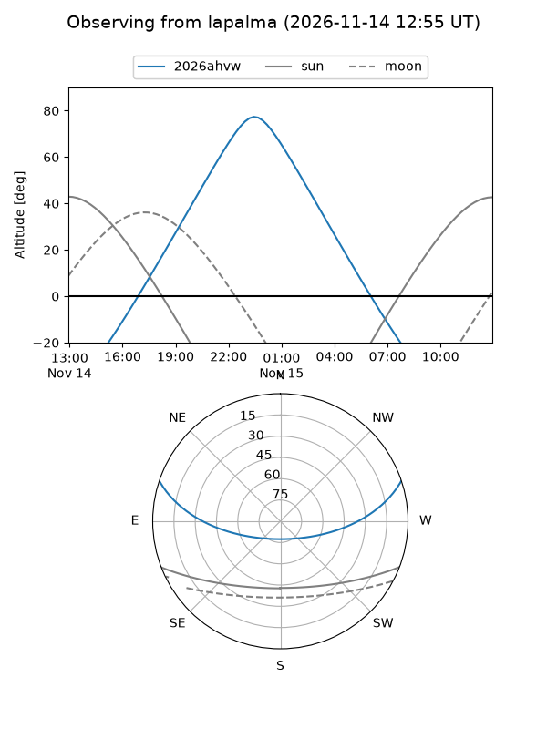
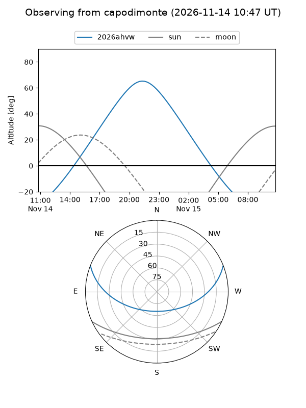
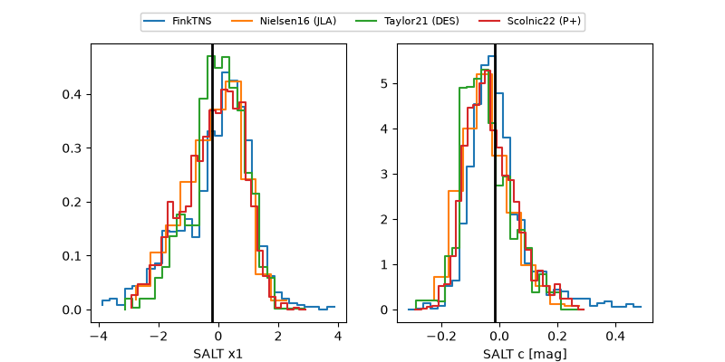

2026ahvw
Target 2026ahvw at 2026-11-14 13:15
Aliases and brokers:
FINK-ZTF: ztf.fink-portal.org/ZTF26aceaknz
Lasair-ZTF: lasair-ztf.lsst.ac.uk/objects/ZTF26aceaknz
ALeRCE-ZTF: alerce.online/object/ZTF26aceaknz
YSE-PZ: ziggy.ucolick.org/yse/transient_detail/2026ahvw
TNS name: wis-tns.org/object/2026ahvw
Direct TNS query: direct search
alt names
ZTF26aceaknz (ztf,fink_ztf)
2026ahvw (tns,yse)
Coordinates:
equatorial (ra, dec) = 27.7960,+15.98842
equatorial (HMS+DMS) = 01:51:11.03,+15:59:18.30
galactic (l, b) = (143.2641,-44.51178)
Flags:
peak dt: +10.2
Photometry:
last ztfg=20.02, ztfr=19.98
6 ztfg, 5 ztfr detections
Lightcurve
Visibility



Additional plots
